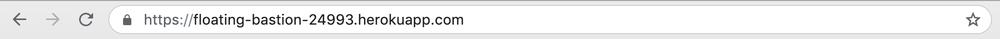
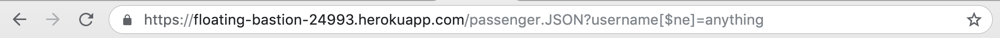
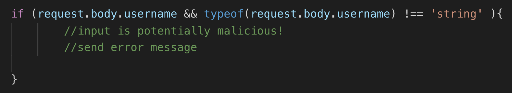
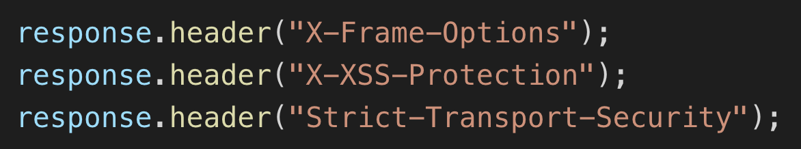

I was tasked with assessing the web security of a ride hailing service platform developed by Philip Miljanic. Components of this platform included a client-facing HTML interface featuring a Google Map populated with vehicle and driver data. Each client’s username and location was submitted to a server via an HTTPRequest, which returned data of other vehicles/drivers with which the map was populated. The web app/server — a node.js/express web application hosted on the Heroku cloud platform — is located at https://floating-bastion-24993.herokuapp.com/.
Several methods were used to get a sense for the platform's security and privacy issues. First, I examined the platform’s source code and interacted with the server through the terminal to get a sense of its capabilities. This alone revealed a key privacy issue. Subsequently, basic attempts at compromising the site were launched from the terminal and the browser, including attempts at cross-site scripting and Mongo DB injection. After these security-breaching attempts, I ran a vulnerability scan using a Pentest-Tools scanner, which provided some suggestions for additional security configurations.
This webapp has both basic privacy issues that any user could find, as well as vulnerabilities that moderately knowledgeable hackers could exploit. First, accessing the web app’s main route (i.e https://floating-bastion-24993.herokuapp.com/ ) shows a complete history of all drivers’ names, their precise locations, and times, which constitutes a major privacy issue: any user accessing the web app could potentially deduce a particular driver’s significant locations (such as their home or work). In addition, inputing specific text after the url https://floating-bastion-24993.herokuapp.com/passenger.JSON leads to a similar display of all passenger information (that is, it shows a complete history of all passenger usernames and locations). The webapp also has what’s known as “insecure configurations”, which essentially means its settings make it vulnerable to further security breaches. Attempts at one major genre of security vulnerability (cross-site-scripting) were notably unsuccessful, which is a positive attribute of the webapp’s security.
Sensitive private information is accessible to malicious individuals with no technical skill.
This issue is found at the webapp's ‘/‘ route ( https://floating-bastion-24993.herokuapp.com/ )
This issue is simple to find, as it is the default output of the webapp default route at https://floating-bastion-24993.herokuapp.com/. It is particularly dangerous because it contains old location and time data, which a malicious user could analyze to determine sensitive information (such as home address, frequently driven neighborhoods or work schedule). This is unacceptable for a reputable platform serving a public audience.
I recommend either adding in an authentication layer to prevent unauthorized individuals from accessing this page, or at the very least remove the ID from the documents returned in the list to better abstract drivers' data and make differentiating individual's sensitive information more difficult.
Sensitive private information is accessible to hackers with modest skill.
‘/passenger.JSON’ route ( https://floating-bastion-24993.herokuapp.com/passenger.JSON )
Exploitation of this vulnerability takes advantage of the MongoDB operator [$ne]. By inputing the querystring “username[$ne]=anything”, the database returns a list of all passengers and their historical locations and times. Like Issue 1, this is a major security breach, as a malicious hacker could easy obtain this unprotected data and analyze it for likely passenger information (like home/work address or habitual location). Again, this is unacceptable for a reputable platform serving a public audience.
To protect against a MongoDB injection, the developer should add code that ensures submitted inputs, are in, fact strings (and not malicious scripts or MongoDB operators like in the example with [$ge]). This type check could look something like:
Any domain - and thus any malicious user - can access this web application.
This response header was set for the post route and both get routes in the developer's source code (index.js file).
This issue pertains to the response headers designated for each of the routes for the developer’s web app. Each route contained the CORS header “response.header("Access-Control-Allow-Origin", “*”).” This is considered an insecure configuration by OWASP, since the ‘*’ allows any domain to access the web application and thus private and sensitive user data, as outlined in issues 1 and 2. AGAIN, this is unacceptable for a reputable platform serving a public audience.
I recommend either designating a specific domain instead of '*'' (perhaps the rideshare platform's internal domain) to keep out unauthorized individuals. Another option is to utilize the basic access authentication method to verify access if authorized.
To make this ridesharing platform more secure for all users of the service— (and to keep prospects of a $$$ IPO possible) — I suggest that the developer undertake the following actionable steps:
1. Handle the CORs header issue (either swap out * for a designated domain or enable basic access authentication).
2. Type check all querystrings, as discussed in Issue 2 solutions. Even with CORs restricted to a safe domain, this should still be done, as HTTP request information can be faked.
3. Reconsider your webapp design to ensure that private and sensitive data is only returned by the server if it serves a genuine purpose, or at the very least enable some secondary authentication (beyond the CORs authentication in case of a breach there) if that functionality is necessary.
4. In order to be more secure against threats potentially not encountered in this review of the platform, I recommend adding these HTTP response headers...
...in order to be more secure against threats such as click-jacking, cross-site-scripting and "man in the middle" attacks.
5. Finally, I also recommend purchasing the “Pro-Basic” version of Pentest-Tools and running a full diagnostic scan of the webapp from that platform.
• Main webapp (https://floating-bastion-24993.herokuapp.com/rides)
• WebSecurify blog (https://blog.websecurify.com/2014/08/hacking-nodejs-and-mongodb.html)
• Comp20 webpage (https://tuftsdev.github.io/WebProgramming/notes/web_security.html)
• OWASP (https://www.owasp.org/index.php/OWASP_Secure_Headers_Project)
• Atlassian.com (https://www.atlassian.com/trust/security/security-severity-levels)
• OWASP on CORS(https://www.owasp.org/index.php/Test_Cross_Origin_Resource_Sharing_(OTG-CLIENT-007)#Origin_.26_Access-Control-Allow-Origin)
• Sqreen (https://blog.sqreen.com/prevent-nosql-injections-mongodb-node-js/)
• Pentest-Tools free web server scan (https://pentest-tools.com/home)